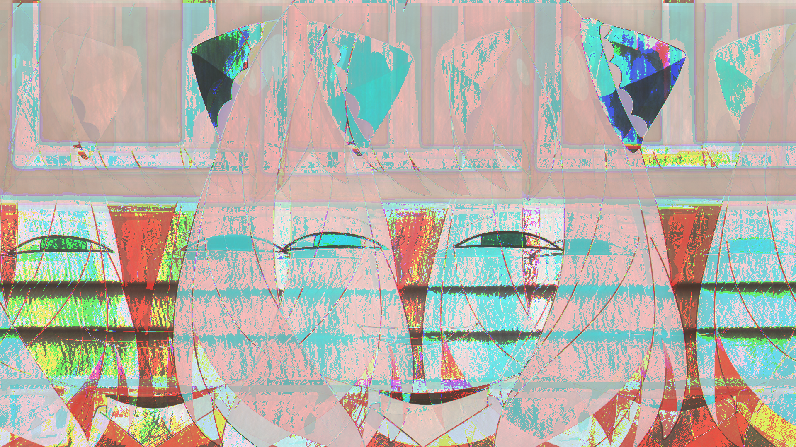
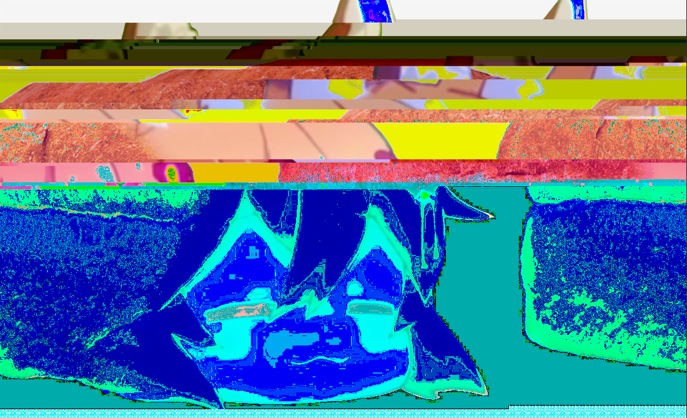

Glitch Art consists of the transformation of normal image files into raw data and tinkering with the text in order to affect
the image itself when returned back into an image file. These images shown went through a change whether it was changed through text,
or was modified through the use of audio editing.
 